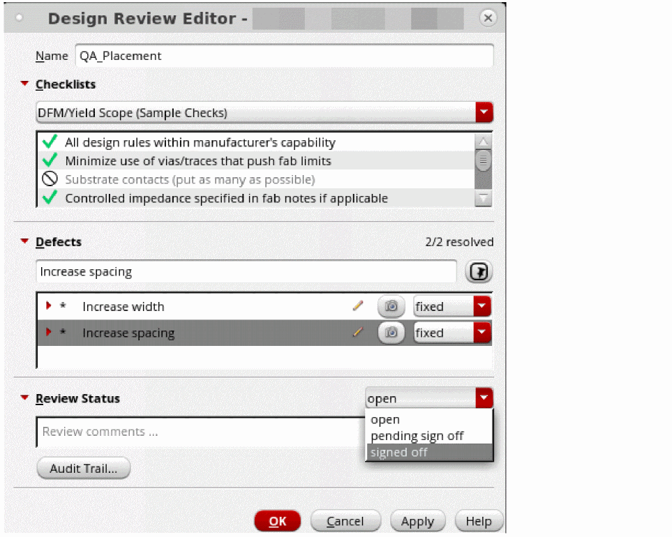
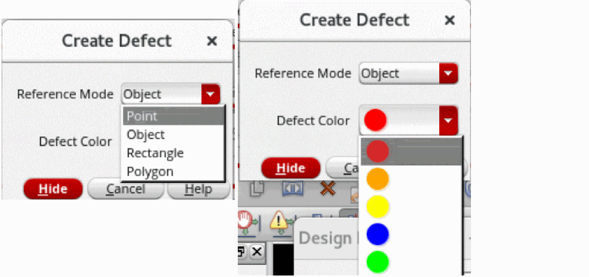
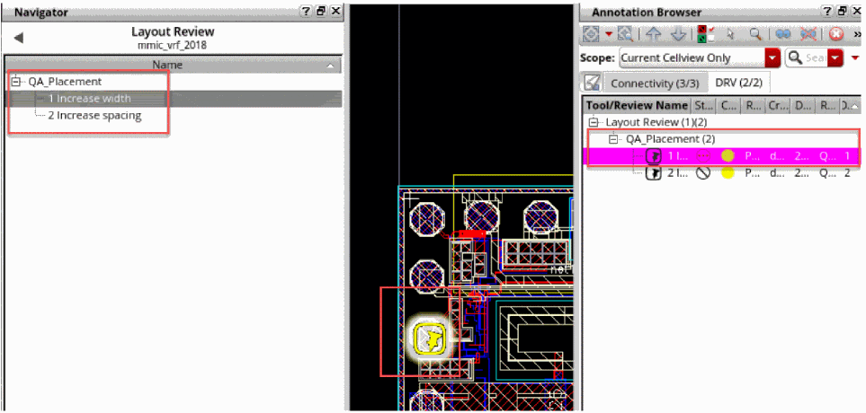
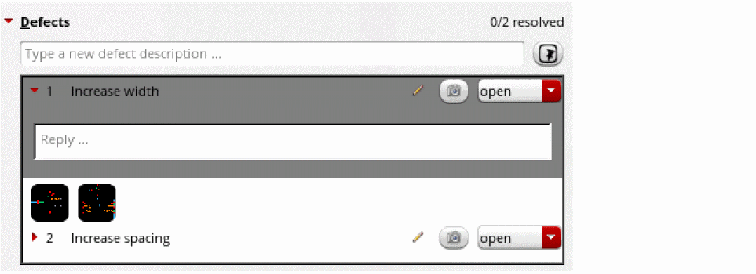
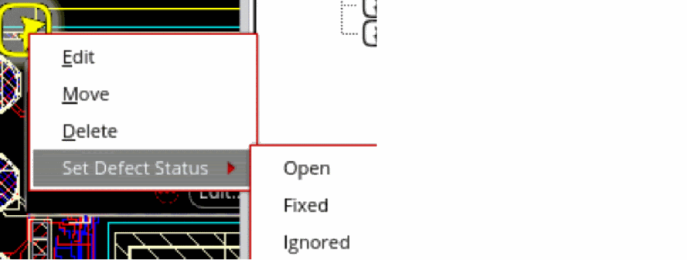

2
Performing Design Review
Design review ensures that all review details are located at one place for reference. It is easy to review, fix, and synchronize with design data in the Navigator or Annotation Browser. The canvas interaction and visualization makes it a very context-specific review process.
To review a design and create defect markers as a reviewer:
- Right-click in the layout canvas and click Design Layout Review – Create Review. The Design Review Editor form opens.
-
Specify a unique name of the review in the Name field of the form.
 - [Optional] Select the checklist that you want to use from the drop-down list in the Checklists section.
- [Optional] Select the check boxes displayed in the text field to indicate the checks being used or double-click them to indicate the checks being ignored.
- [Optional] Specify a name for the defect in the Defects section and click the Add Defect Marker button.
-
Press
F3to open the Create Defect form. -
Specify the values for the Reference Mode or Defect Color fields in the form.
 -
Place the defect icon at the appropriate location on the canvas and observe cross-views or Annotation Browser. Note the new tab for defects
DRVin the Annotation Browser and new object categoryDesign Review(DRV)in the Navigator.
 -
[Optional] Click the camera icon next to the defect in the Design Review Editor form to attach a screenshot of the defect area. You can add more than one screenshot to a defect.You can view the screenshots in full size and browse through them by clicking on a thumbnail under the defect. Right-click on a thumbnail and click Delete to remove that screenshot.
- Specify the appropriate review status by selecting a value from the adjoining drop-down list in the Review Status section.
- Click OK or Apply to save the defects in the layout database.
To review a design defect and update the status of a review as a designer:
- Review the defects listed in the Defects section by selecting them and cross-viewing in the canvas and Annotation Browser.
-
Update the status of each defect by selecting the values from the adjoining drop-down list, or use the right-click menu in the canvas itself. You can also add comments by clicking the pencil icon on the defect row.
 - Finally, report the appropriate review status by selecting a value from the adjoining drop-down list in the Review Status section to the reviewer.
Related Topics
Introduction to Design Review Flow
Creating a SKILL Callback for Checklist Items
Return to top